DOC 01SHIPPED The product TASKDesign and build the screens of one web app that runs a company’s daily agenda, for very different people on very different devices. PROBLEMThe modules had grown over the years, and the way people really used them no longer matched the way they were meant to be used. There had never been a designer on the product. SOLUTION Mapped every module before touching it: code review, database inspection and a written workflow of how it is actually used. Defined user roles and access: who can see, enter and edit what. Handed over specs a developer does not have to guess at, with states, roles and exceptions. Cut full-page postbacks and added skeleton states, so an empty page is never mistaken for a fault. Shipped in four languages, including the screens where the translations are edited.
DOC 02 · MODULELIVE Warehouse Aug 2025 – Oct 2026 · design + build · read-only view on stock 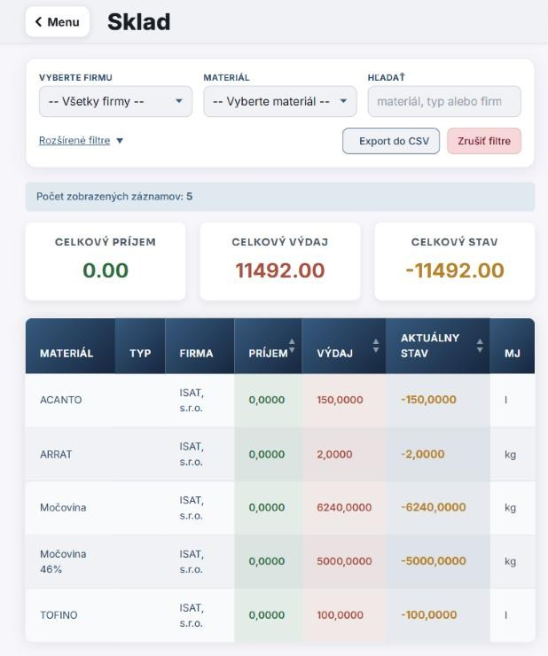Warehouse: company filter first, totals, unit as its own column (test account) TASKShow how much of each material is left, per company, wherever the user is, including on a phone. The module only reads stock movements; another part of the system writes them. PROBLEMThe grid added up quantities without looking at the unit, so 2,000 g and 2 kg became “2,002”. I measured it across every warehouse table instead of guessing: 277 of 11,330 rows mixed units, almost all with two genuinely different units. SOLUTION Totals are now split by unit. A read-only module must never quietly “fix” data it doesn’t own, so it shows the mess instead of hiding it. Company is the first filter; the material name column stays pinned when the table scrolls sideways on a phone. Table / chart toggle moved into the filters, because it is a view setting, not a separate tool. Built only on design-system tokens, so dark mode works out of the box.
DOC 05 · COMPONENTLIVE Info Manager Dec 2025 – Oct 2026 · design + build · the largest module: 70 commits, ~9,000 lines 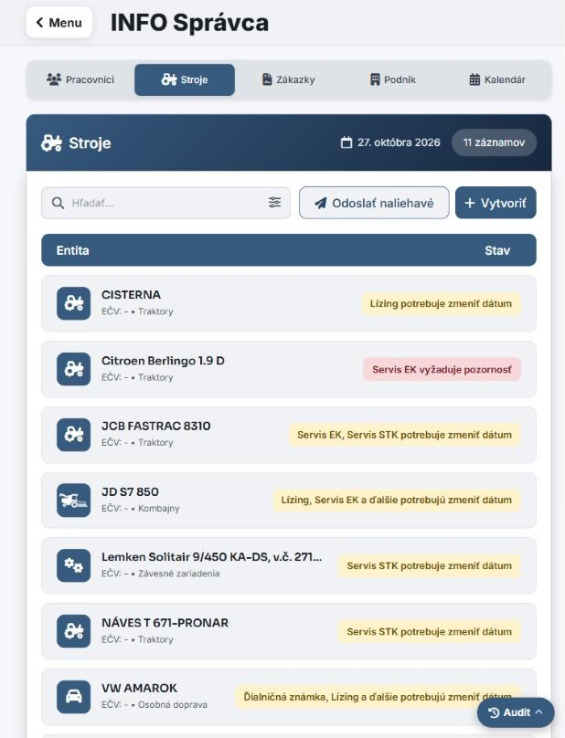Machines tab: status shown by colour and by word (test account) TASKKeep track of every date after which something stops being valid: an employee’s medical check, a machine’s MOT, a service contract, a reporting deadline. PROBLEMA company has dozens of these dates, and the only place they were all together was the administrator’s head. SOLUTION From one date and one number (how many days ahead to warn) the module produces a status, a colour, a notification and an e-mail, for four kinds of objects: people, machines, jobs and the company. At most three urgent items per category on the overview; status is shown by colour and by word, so it works for colour-blind users and in print. New entries are prefilled from existing registers: pick a machine and its plate and type fill in by themselves. The only module with an audit log, because it owns its data: whoever changes something has to be on record.
DOC 06 · COMPONENTLIVE Livestock Records Aug 2026 – Oct 2026 · design + build · about a thousand animals on record 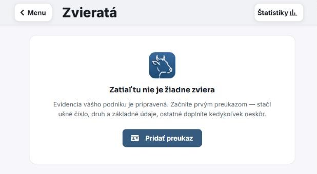Empty state of a new farm: start with one card, fill in the rest later (test account) TASKTake the list of animals and add everything written about them during their life: health, reproduction, hooves, documents, photos, pedigree and a timeline. PROBLEMData about an animal is created next to the animal, in the barn, phone in hand and often in dirty gloves, but it was only written down in the office in the evening, if at all. SOLUTION Designed phone-first: expandable cards instead of table rows, large touch targets and a bottom bar within thumb reach, the only one in the whole app. Treatments are added right on the animal, not on a separate screen, which saves two taps on every entry. Photos straight from the module, a status badge with colour and word, and repeated treatments grouped instead of ten identical rows. Pedigree and timeline answer different questions: where the animal comes from, and what happened to it.
DOC 07 · COMPONENTLIVE Meal Ordering Jun 2025 – Oct 2026 · design + build · practical part of my master’s thesis 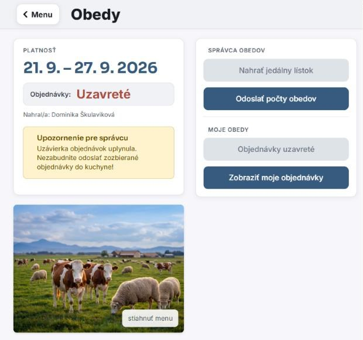After the cut-off: the administrator is reminded to send the summary to the kitchen (test account) TASKReplace the paper menu on the noticeboard: the administrator uploads the weekly menu, employees pick a meal for each day before the cut-off, and the kitchen gets one summary e-mail. PROBLEMPeople signed a paper sheet, someone had to copy it out and phone the kitchen every week, and anyone who wasn’t in the building that day was out of luck. SOLUTION Choices can change until the cut-off, as on paper; locking after the first click would have been worse than paper. A visible countdown shows how long is left. Uploading a new menu no longer wipes existing orders. It once did, and a whole company’s orders vanished. The kitchen e-mail can’t be sent twice: the check lives in the database, not in a disabled button. Most changes came from how the module behaved in use. One lesson repeated: it did things the user didn’t know about.
DOC 08 · SUBPAGELIVE Profile & settings Jul 2026 – Oct 2026 · design + build · 13 sections, 7 for regular users 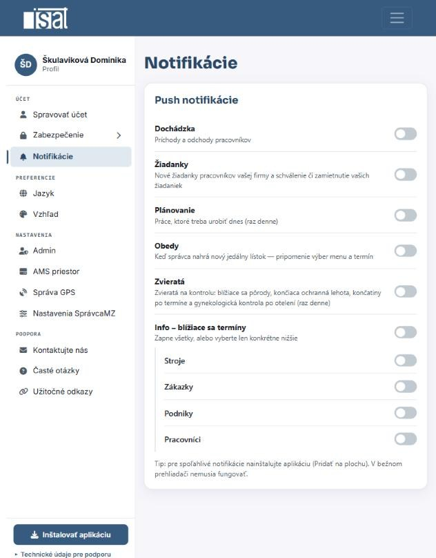Notifications: one toggle per type, shown according to permissions (test account) TASKOne place where a user sets up everything about themselves rather than their work: account, password, signed-in devices, notifications, language and appearance. PROBLEMSettings were scattered: language in the header, appearance nowhere, notifications couldn’t be switched off, and there was no single place to say how you want things. SOLUTION A side panel on desktop that becomes a list with arrows on mobile, a different structure rather than a squeezed panel. Notification toggles appear according to permissions; a toggle the server wouldn’t save isn’t shown at all, rather than greyed out. Personal details come from the signed-in session, after a bug where a stranger could appear in someone’s profile. Install-as-app button only when the browser can really install it; dark mode that each page opts into, so older pages don’t break.
DOC 09 · DESIGN SYSTEMSHIPPED Components (design system) [ADD SCREENSHOT] TASKCreate a design system from a single base colour, and put it to work in Info Manager, Livestock Records and Meal Ordering. PROBLEM[ADD: what the screens looked like without a shared system] SOLUTION Primitives and semantic tokens; buttons in three levels plus a destructive variant. Inputs with all of their states, modals, cards, tiles, badges, empty and loading states, a focus ring. Dark mode defined as a second set of values, not an inversion.
DOC 10 · BRANDSHIPPED Brand Kit [ADD SCREENSHOT] TASKGive the product and the company one consistent look. PROBLEM[ADD: what the brand assets looked like before] SOLUTION Brand guidelines the team works to. Redrew the company mark as a vector. A set of twelve icons.
DOC 01DEMO Brief 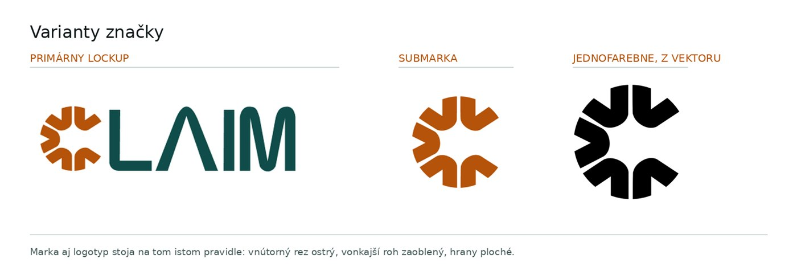Primary lockup, submark and one-colour version TASKCreate a solution to improve CX for reporting a car accident. PROBLEMCurrent accident claim process is complex and time-consuming. People often feel stressed and are prone to make mistakes, when filling out personal or vehicle information. SOLUTION The whole method is built on the European Accident Statement with revisions. Out of scope: the green card, the insurer’s claim handling, the web form for the second driver and country-specific legal values.
DOC 02DEMO Research & users TASKFind out whether someone has already solved this. Where something works, it should be improved, not replaced. PROBLEMExisting options each miss the moment itself: the digital accident statement is paper on a screen, insurer apps assume you report later from home with the other party already known, and the paper form assumes you have it, a pen and a shared language. SOLUTION Instead of invented personas: domain-based scenarios. A cross-border crash with no shared language, a report three days later from home, a driver who drove off, an accident with no other party. An assumption register: what I assume, how I would test it, and what changes if it’s wrong. For example, whether a stranger will scan a QR code at the scene.
DOC 03DEMO Analysis 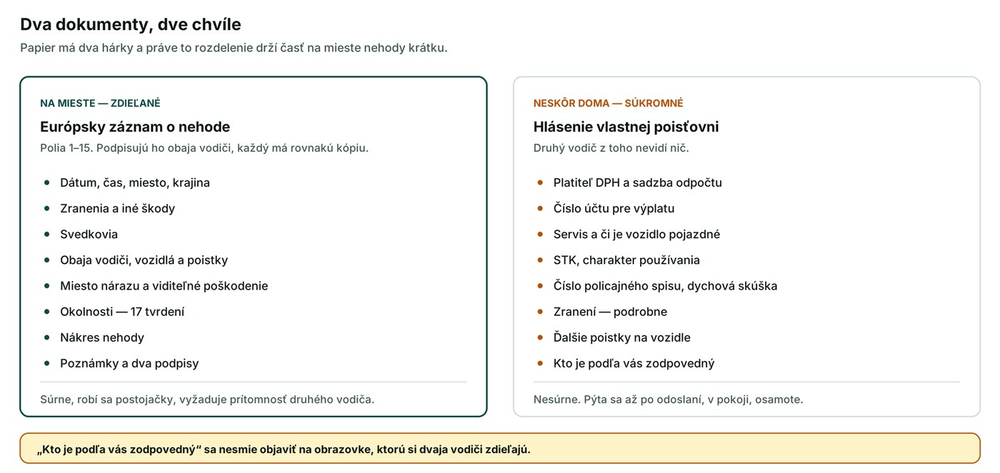Two documents, two moments: shared at the scene, private later (in Slovak) TASKMap every field of the European Accident Statement to the app. Its field numbering is the same in every language: field 7 is the vehicle, whether the form is Slovak, French or Italian. PROBLEMPaper assumes both drivers stand side by side with a working pen, read the same language and have the form in the glovebox. On the road, all three fail. SOLUTION Each driver fills in their own half on their own phone, in their own language, with shared field numbers. A gap analysis between my data model and the form: policyholder vs. driver, trailers, six types of cover, the bank account that actually receives the money. The two sheets of the paper form became the key structural idea: what has to happen at the scene, and what can wait until you sit down.
DOC 04DEMO Information architecture 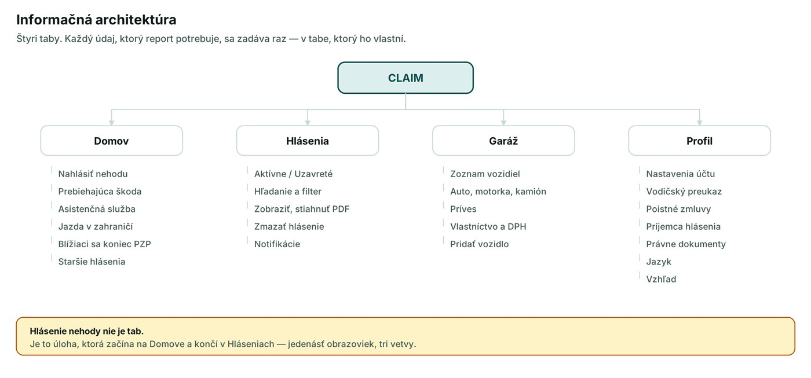Four tabs; reporting an accident is a task, not a tab (in Slovak) TASKStructure the app so the report itself has almost nothing left to ask. PROBLEMThe report needs data about the driver, the vehicle, its owner and the insurance contract, and people are stressed when they fill it in. SOLUTION Four tabs: Home, Reports, Garage, Profile. Every piece of data is entered once, in the tab that owns it. Ownership type does more work than it seems: personal, leased or company car decides who the policyholder is. 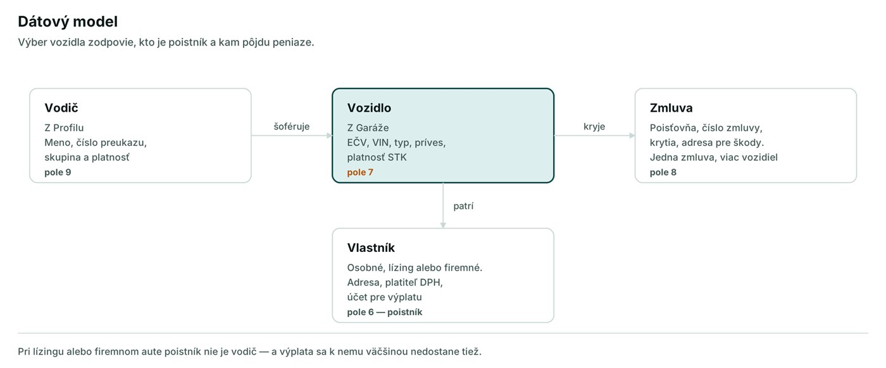Data model: driver, vehicle, owner, contract (in Slovak)
DOC 05DEMO Report flow 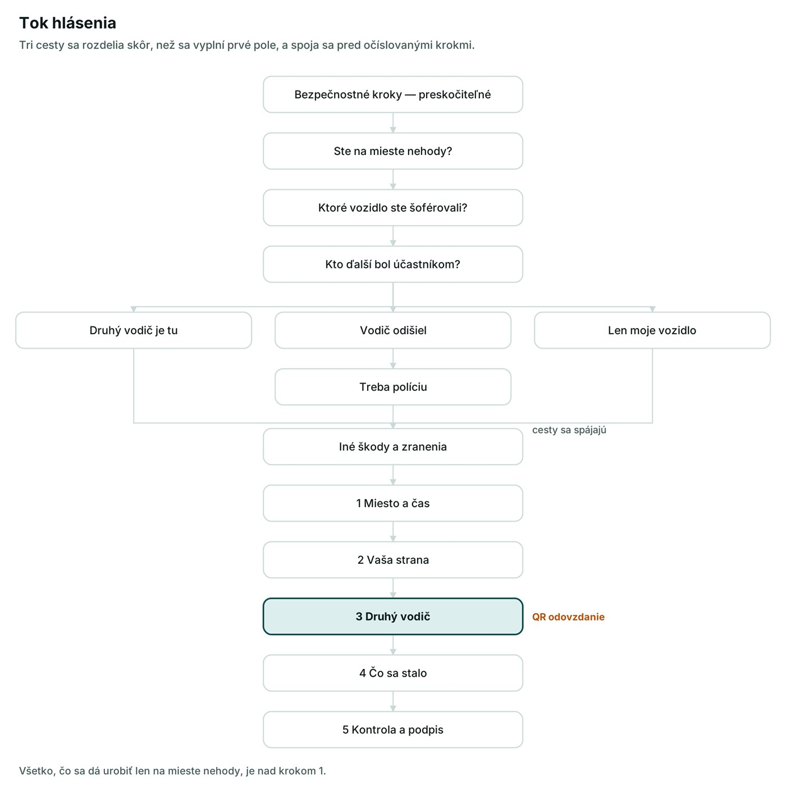Three paths split before the first field and join before the numbered steps (in Slovak) TASKGet a shaken driver from the crash to a signed report. PROBLEMSomeone reporting an accident from three days ago doesn’t need safety steps, and a driver who drove off is a different case from no other party at all. SOLUTION “Are you at the scene?” comes first. It hides the safety steps when they’re noise and decides whether date and time are known. Skippable safety steps, injuries and 112 first, one thought per line: after a crash people scan, they don’t read. Three branches (other driver here, driver left, only my vehicle) that close before five numbered steps, so the progress bar means the same on every path.
DOC 06DEMO Logo 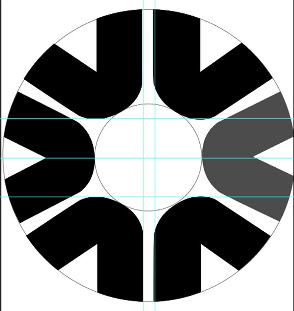Construction in Illustrator; removing the grey sector opens the circle into a C TASKA mark for an app people open on one of their worst days. PROBLEMIt shouldn’t be a drawn letter with a wheel next to it. SOLUTION Built from geometry: the ring between two circles is split into eight equal sectors, and the same cut removes a wedge from each. Removing one sector on the right opens the closed circle into a C, and the empty inner circle reads as a wheel hub. One shape that is both. The custom logotype follows the same rule: sharp inner cut, rounded outer corner, flat edges.
DOC 07DEMO Brand identity 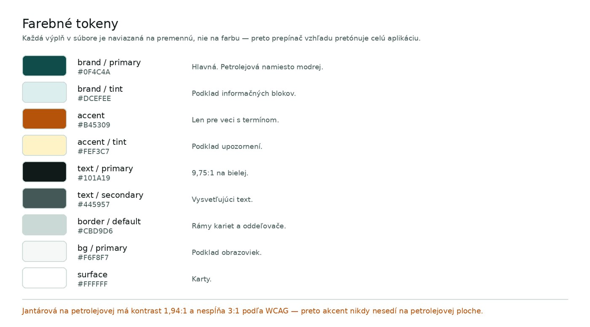Colour tokens; the accent has a job, not a decoration (in Slovak) TASKColours, components and tone for a product people use a few times in their life, under stress. PROBLEMBlue is the default in insurance, so a blue app says “insurer”, and CLAIM isn’t one. SOLUTION Petrol instead of blue: calm without sameness. Amber as the accent, the colour the road already uses to say something happened (hazard lights, hi-vis vests). Every fill is bound to a variable in light and dark mode; tested screens had 97–100 % coverage. No illustrations. A cute drawing doesn’t soften a crash; restraint is the decision.
DOC 08DEMO Screens & prototype TASKTurn the structure into high-fidelity screens and a clickable prototype. PROBLEMThe structure was rebuilt five times, each time because the analysis revealed something, for example that a branch has to close before the first shared screen or the prototype can’t carry the choice. SOLUTION 36 screens with a token-based component library: a button in 36 variants, inputs, status pills, progress, segmented filter, bottom navigation and icons. Motion only where it explains something: the submark is a wheel, so on launch it makes one full turn and reveals the rest of the name. Open the prototype in Figma.
DOC 09PLAN Validation & handoff TASKSay honestly what is verified and what isn’t. PROBLEMNothing has been tested yet. This is a plan, not finished prototype. SOLUTION Tests ordered by risk: QR handoff between strangers, understanding at the signature (it is not an admission of guilt), whether people do or skip the safety steps, location accuracy, onboarding vs. time to report. What I’d do differently: write the assumption register at the start. The QR handoff is the riskiest assumption in the product and the part I designed most confidently. Known gaps handed over openly: error, empty and loading states, the drawing tool, and open questions for legal, claims and development.
DOC 01ARCHIVED Brief TASKRedesign the site to its next version with a focus on answering customer questions. PROBLEMPrices had to be requested, there was no information on materials, and getting in touch meant leaving the website. SOLUTIONA new design built on research and process mapping, with three new interactive parts: a price calculator, a materials page and a contact form.
DOC 02ARCHIVED Research 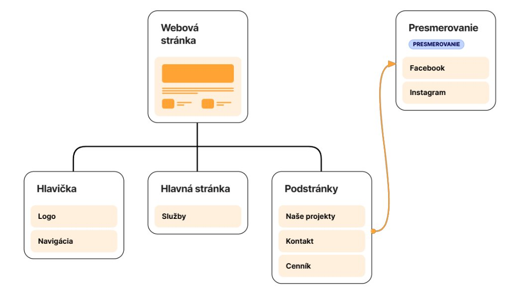Structure of the first version of the site TASKUnderstand the business, its customers and what the website has to do. PROBLEMTwo very different audiences: companies comparing in-house production with ordering a part, and households without technical knowledge. SOLUTION A technical and content analysis of the site. Data showed that mobile usage was dominant. A SWOT analysis and a comparison of six CMS platforms.
DOC 03ARCHIVED Price calculator 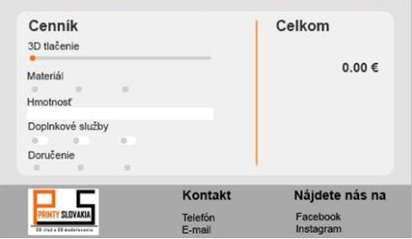Interactive price calculator (mock-up) TASKLet customers see what a print will cost without having to ask. PROBLEMThe price list was a static table of hourly rates. Every quote was calculated by hand, and for people outside the industry it was hard to tell which services they actually needed. SOLUTION An interactive calculator on the homepage: pick the services, the material and set the weight and print time with sliders. The estimated price updates live and is clearly marked as a guide price. The separate price list page was removed, which freed a menu slot for Materials.
DOC 04ARCHIVED Materials 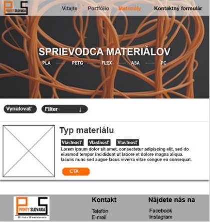Materials page with a filter (mock-up) TASKHelp customers choose the right filament for their project. PROBLEMCustomers had to look up filament properties elsewhere, and while searching they could end up with a competitor. SOLUTION A new Materials page for PLA, PETG, ASA, PC and FLEX, each with a picture, key properties and a “Find out more” detail. A filter by strength, flexibility, heat, UV, chemical and moisture resistance, looks and biocompatibility.
DOC 05ARCHIVED Contact 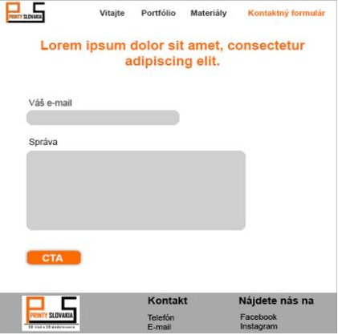Contact form (mock-up) TASKMake it easy to get in touch from anywhere on the site. PROBLEMThere was no way to send a message from the website itself. SOLUTION Phone, e-mail and social links moved to the footer of every page; one tap opens the phone or mail app. A contact form with an automatic confirmation that the message arrived.
DOC 06ARCHIVED Build 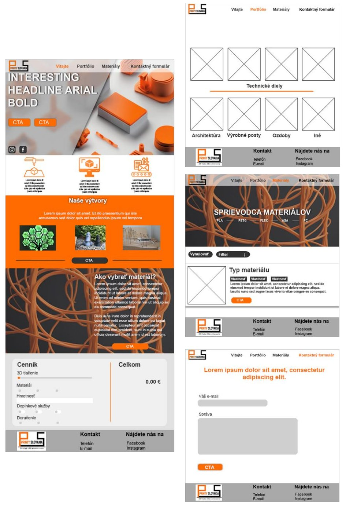Full mock-up from the thesis: homepage, portfolio, materials, contact TASKTurn the mock-ups into a fast, responsive site the owner can keep editing. PROBLEMThe page builder Elementor generated a lot of extra code, which slowed the site down and limited fine control. SOLUTION Moved to the native Gutenberg block editor on the free Neve theme: cleaner code, better SEO, more control. Separate hero layouts for desktop and mobile, full-width buttons and a hamburger menu on phones. A redesigned logo, an orange-white-grey palette (60-30-10) and a sans-serif with full Slovak diacritics. A custom back-to-top button in HTML, CSS and JS instead of buying the premium theme.